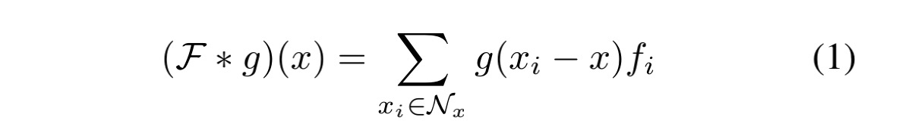
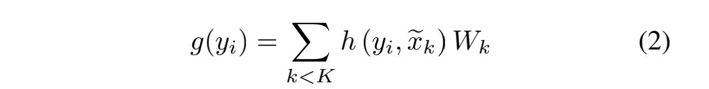
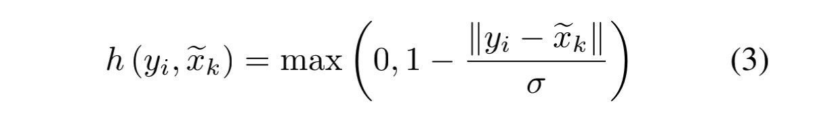
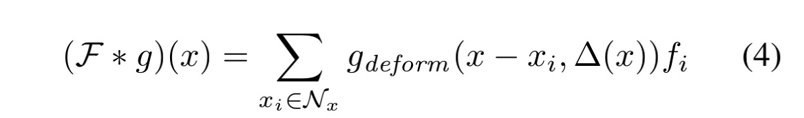
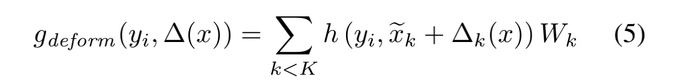
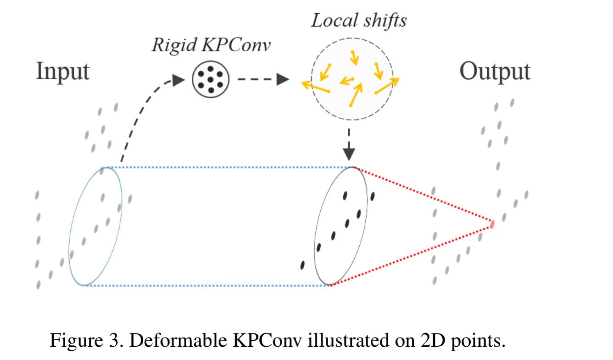
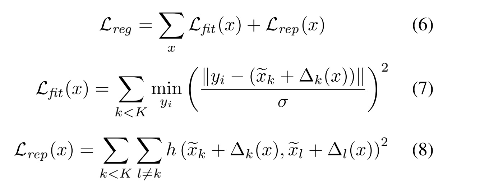

<!DOCTYPE html>
<html xmlns="http://www.w3.org/1999/xhtml" lang="zh" xml:lang="zh">
<head>
  <meta charset="utf-8" />
  <meta name="generator" content="pandoc" />
  <meta name="viewport" content="width=device-width, initial-scale=1.0, user-scalable=yes" />
  <meta name="last_modified" content="2021-01-27T22:23:14Z" />
  <meta name="published" content="Jan 27, 2021" />
  <title>Kernel Point Convolution</title>
  <link rel="stylesheet" href="/static/style.css" />
  <link rel="stylesheet" href="/static/syntax-highlighting.css" />
  <style>
      code{white-space: pre-wrap;}
      span.smallcaps{font-variant: small-caps;}
      span.underline{text-decoration: underline;}
      div.column{display: inline-block; vertical-align: top; width: 50%;}
  </style>
  <!--[if lt IE 9]>
    <script src="//cdnjs.cloudflare.com/ajax/libs/html5shiv/3.7.3/html5shiv-printshiv.min.js"></script>
  <![endif]-->
  <link rel="icon" href="/static/favicon.ico" type="image/x-icon"/> <link rel="shortcut icon" href="/static/favicon.ico" type="image/x-icon" />
  <meta name="author" content="Yanjie Ze">
  <meta name="viewport" content="width=device-width, initial-scale=1" />
  <script> window.dataLayer = window.dataLayer || []; function gtag(){dataLayer.push(arguments);} gtag('js', new Date());
  gtag('config', 'UA-116308654-1'); </script>
</head>
<body>
<a id="return" href="/">  </a>
<header id="title-block-header">
<h1 class="title">Kernel Point Convolution</h1>
<p class="date">Jan 27, 2021</p>
</header>
<h3 id="阅读论文kpconv-flexible-and-deformable-convolution-for-point-clouds">阅读论文：KPConv: Flexible and Deformable Convolution for Point Clouds</h3>
<h1 id="一介绍">一、介绍</h1>
<center>

</center>
<p>受到二维卷积的启发，采用kernel point代替二维kernel的pixel，来作为kernel。因此卷积核的参数即是点的参数。见图1。</p>
<p>kernel point的数量不是固定的。</p>
<p>使用radius neighbourhood而不是KNN。</p>
<center>

</center>
<p>图2为二维图像卷积与KPConv的比较。在对图像的卷积中，每个像素能对应核的一个像素，但是在对点云的卷积中，卷积核覆盖的点的数量是变化的，因此有一个相关系数表示点与卷积核的相关性。</p>
<h1 id="二kernel-point-convolution">二、Kernel Point Convolution</h1>
<h2 id="核函数defined-by-points">（1）核函数（defined by points）</h2>
<center>

</center>
<p>公式1:对点x的卷积公式。x_i为3维的点，f_i为该点对应的D维特征，g是核函数，N_x是圆心为点x、半径为r的球体所包含的点的集合。</p>
<p>为什么不用KNN来制作集合N_x?原文中是这样说的： &gt; We believe that having a consistent spherical domain for the function g helps the network to learn meaningful representations.</p>
<p>公式1的关键在于核函数g的定义，也正是KPConv的独特之处。</p>
<center>

</center>
<p>公式2:核函数。其中y_i = x_i-x , x_k^hat 为kernel point，W_k 为权重矩阵。h是y_i和x_k^hat之间的相关性，两者越近，该值越大。</p>
<center>

</center>
<p>公式3：计算相关性的函数。受到<strong>双线性插值</strong>的启发。sigma是kernel point的影响距离，通过输入的密度来选择。详见（3）。</p>
<p>这个函数在计算反向传播的时候提供便利。</p>
<h2 id="rigid-or-deformable-kernel">（2）Rigid or Deformable Kernel</h2>
<p>deformable KPConv的定义：</p>
<center>

</center>
<center>

</center>
<p>与rigid KPConv不一样的是，多了一个offset：delta_k(x)。</p>
<center>

</center>
<p>图3是对offset的解释。offset是用rigid KPConv的输出映射到3K个值。</p>
<p>在训练过程中，网络学习产生位移的rigid kernel和同时产生输出特征的deformable kernel，但第一个核的学习速率设置为整体网络学习率的0.1倍。</p>
<p>不幸的是，这种改进不适合点云。在训练时，这些核点被网络丢失，因为当没有邻居在其影响范围内时，∆k(X)的梯度为零。</p>
<p>为了解决这个问题，提出了两种正则化策略，<strong>“fifitting” regularization loss和 “repulsive” regularization loss。</strong></p>
<center>

</center>
<p>公式6、7、8为正则化损失函数。</p>
<h2 id="kernel-point-network-layers">（3）Kernel Point Network Layers</h2>
<p>这一部分阐明了怎样高效地将KPConv运用于实践中。</p>
<ol type="1">
<li>使用grid subsampling进行降采样，解决输入的密度不同的问题。</li>
<li>池化层。</li>
<li>KPConv层。会有一些邻居点被忽略，这些点被称为shadow neighbour，在计算中不考虑。</li>
<li>网络参数。（这里的cell size是什么意思？）</li>
</ol>
<h2 id="kernel-point-network-architectures">（4）Kernel Point Network Architectures</h2>
<p><strong>KP-CNN</strong>：5层的分类网络。每层包括两个卷积块，除了第一层的卷积块，其余层的卷积块的第一个均被stride。最后一层后，用一个全局的average pooling、全连接、softmax。</p>
<p><strong>KP-FCNN</strong>：用来分割的完全卷积网络。编码器部分与KP-CNN中相同，解码器部分使用最近的上采样来获得最终的点状特征。</p>
<h1 id="三读后小结">三、读后小结</h1>
<p>作者提出了一种新的对点云进行的卷积操作，其本质还是对一个点与其周围点的关系进行提炼然后提取特征，再逐层将特征精炼，最终输出结果。</p>
<p>这种卷积方式（Kernel Point CNN）的灵感来源于二维图像的卷积核操作。</p>
<p>实现过程中有更多细节，在代码中再看。</p>
<a style="color:black;font-size:2em;float:right;margin-right:30px;margin-bottom:40px;" href="../">[Return to the homepage]</a>
<script>
var code_blocks = document.querySelectorAll("pre.sourceCode");
code_blocks.forEach(function(block) {
  block.classList.add("numberSource");
  block.classList.add("numberLines");
});
</script>
</body>
</html>
